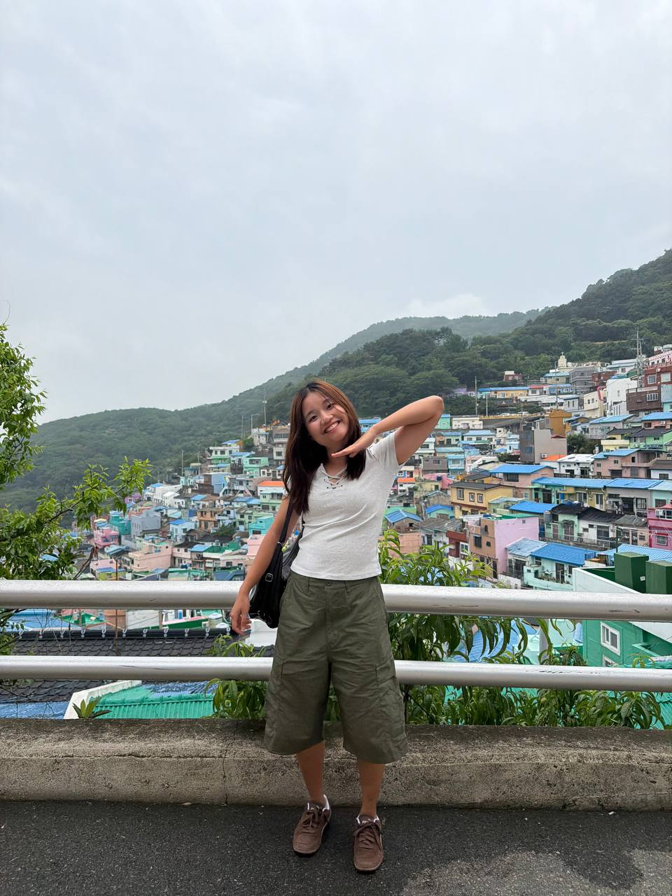
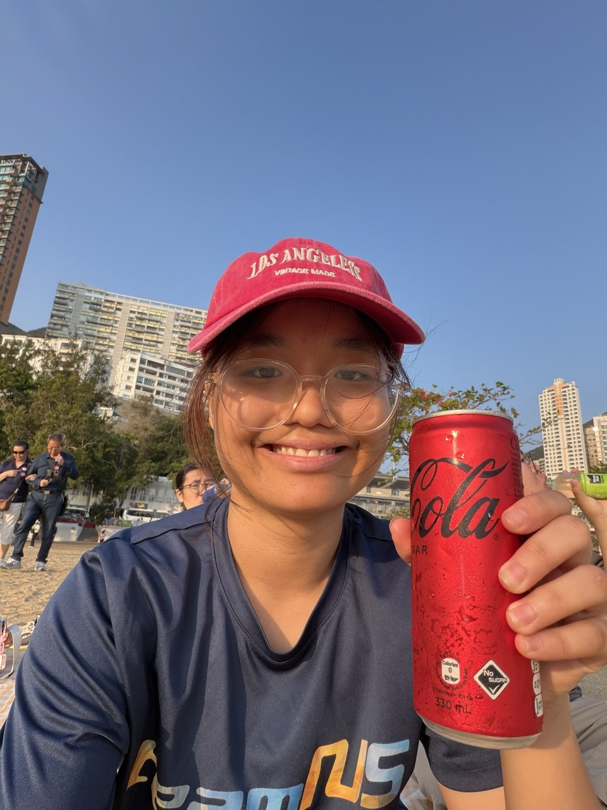

Hi there, I am Kathleen.
I am a final year Data Science and Analytics student at the National University of Singapore.




About me
I think there is beauty in translating raw, messy data into functional digital products. My formal education has equipped me with the skills to do exactly that: using tools like Python and SQL to analyse data and turn it into dashboards that guide business decisions. Along the way, I have also built a solid theoretical foundation in statistics and gained exposure to machine learning and model building.
Personally, I am most intrigued by the business side of data science. Rather than going into machine learning or AI research, I want to be in the room where decisions are made. In a world increasingly shaped by AI, I believe the qualities that make us human are becoming more valuable, not less. That is why I am working on my communication, presentation and networking skills, and on building strong relationships. I hope to grow in an industry that lets me develop holistically and be on the ground, because I genuinely enjoy connecting with people.
Beyond data science and analytics, I pursue my passion for Southeast Asia through a minor in Southeast Asian Studies. I speak basic Vietnamese and Thai, and as a proud Southeast Asian in Singapore, I love learning about the cultures of our region. I also believe the region holds enormous untapped business potential. Ideally, my future role will be APAC-focused, with opportunities to work with and travel to our neighbouring countries.
In my free time, I am an avid Judoka. I also love filming vlogs and editing videos, as well as playing the guitar and singing.